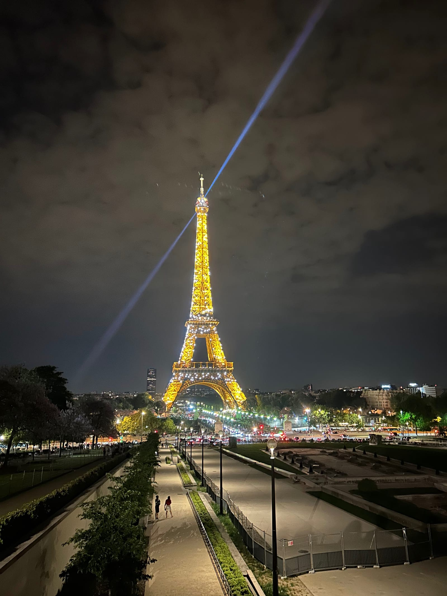
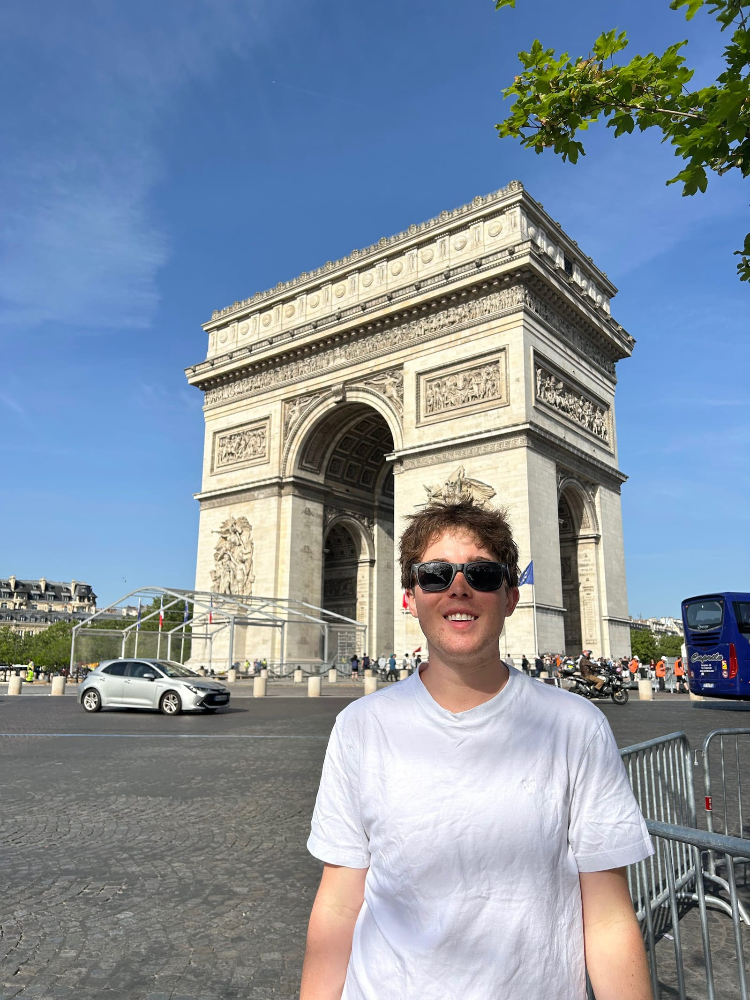
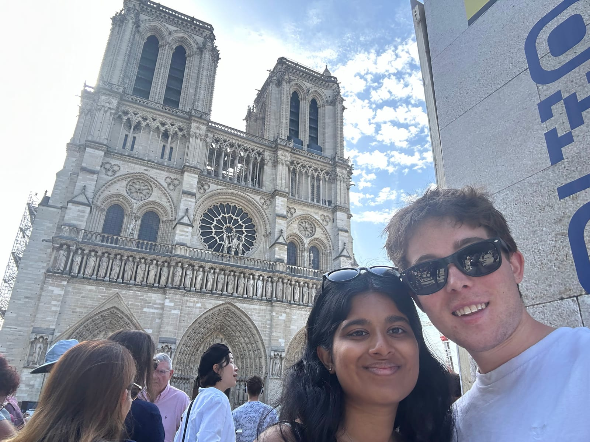
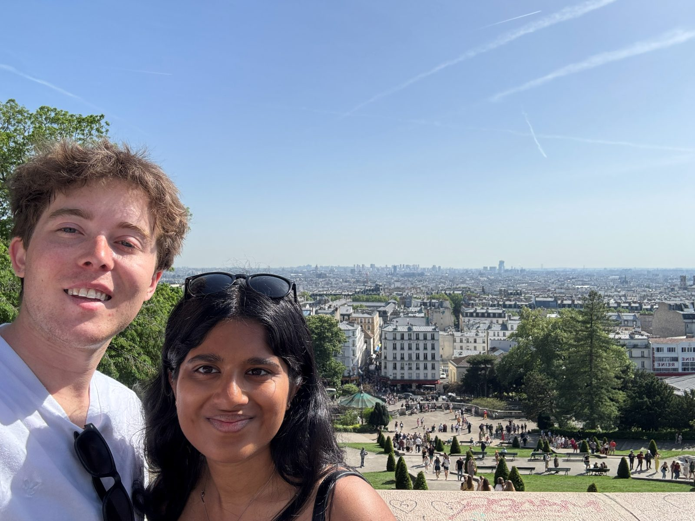
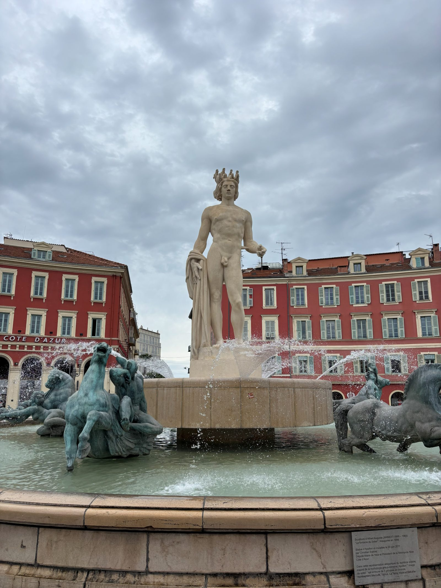
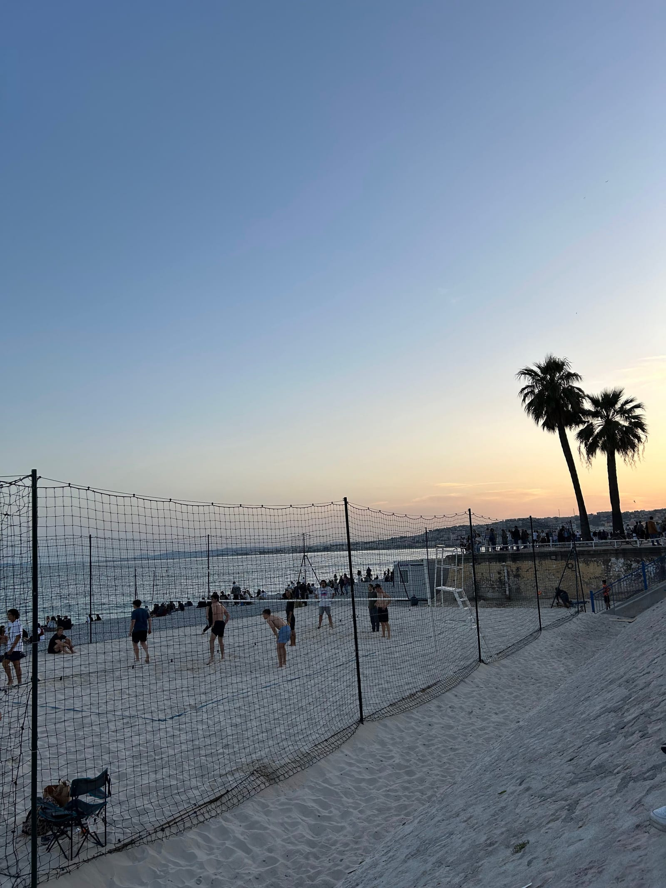
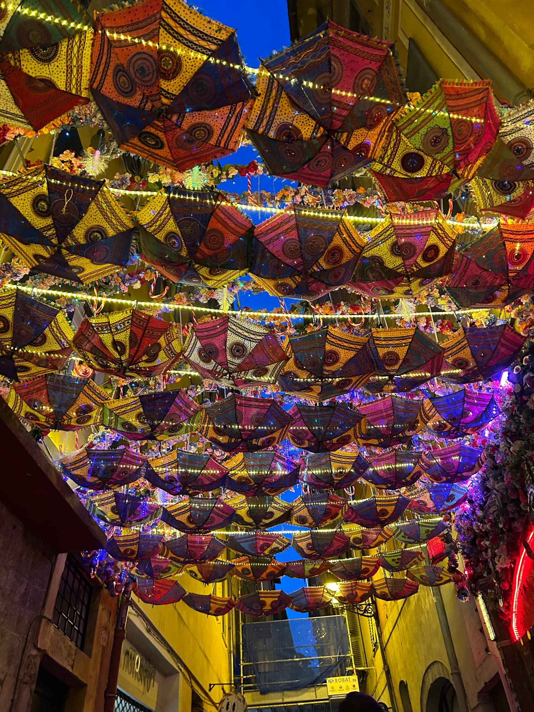
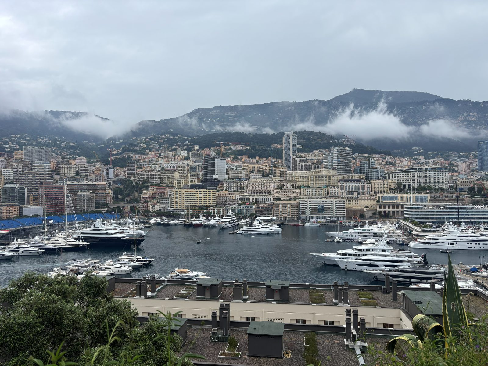

FRANCE-MONACO
Thursday (Travel)
- Hung out at the lounge for a couple hours after arriving from Split
- Got on our only Transavia flight and left at around 9:00
- Took a Bolt to the Eiffel tower and walked around before it sparkled at midnight
- Most touristy place we've been in

- Took Metro back to the Airbnb, did laundry, showered, and slept
Friday (Paris)
- Got up at 8:15, packed and left for the Arc de Triomphe
- We found a nice spot across the street with no one there

- Metro to the Notre Dame
- Insane line to get in, easily one or two thousand people walking around it

- Metro/walk to Basilique du Sacré-Cœur de Montmartre
- Very nice view of the city from on top of the hill

- Took the Metro to Chipotle and then walked to the station to get on the train to Vernon-Giverny
- We took a local shuttle from the train station to the gardens for €10 round trip
- The line was super long for tickets at the garden but they opened another one and we split up and I got way further up that line so we got in not too long after
- Pretty gardens and Monet's house but super crowded
-
1 / 2
- Took a Bolt back to Vernon since the shuttle timing wasn't what we needed
- Walked around the city for about an hour and went to the station to wait for the train
- The platform was full and most of the seats on the train were taken when it got there
- We got lucky and the door was right next to us so we had nice spots to lean on for the hour ride back to Paris
- It took 5-10 minutes instead of 2 to leave the station because people were trying to cram into the train it was so full
- Once we made it back at around 6:20 we walked to a place for Crepes
- Good crepes and cider
- Took the metro to the stop before the airport so we could save €10 each by transferring to a bus at the end
- We never found the bus since there was construction outside the metro stop
- Decided to call a ride on Bolt but the driver cancelled
- The next driver just never moved after like 5 minutes
- At this point it was 8:10 and our 9:30 flight had gates closing at 9:00
- We got back on the metro but couldn't figure out how to buy airport tickets on the machine
- We rode with normal tickets hoping they don't check on the way out of the station at the airport
- They did check, I walked right behind a lady right away and the security person was distracted so they didn't see
- Mahathi had to try a few times before the doors didn't close on her but the security wasn't paying attention so we kept running towards the terminal
- We walked right through security basically and the flight was pretty delayed so we did all that for nothing but we had no way of knowing at the time
- Flight got delayed even more and took off an hour late
- Checked in, showered, did laundry, and went to bed
Saturday (Nice)
- Got up a little after 9 and went on a run down the Promenade towards a viewpoint
- Walked up to the viewpoint and a manmade waterfall
- Great view of the city and beach
- Nice mist from the waterfall to cool us off after a workout
-
1 / 2
- Walked home through the market area and showered

- Went to brunch at Popote Bistrot
- Very good savory crepes, I got an Italian one with burrata, tomatoes, and pesto and Mahathi had a vegetarian one
- Walked around more of the market area for a while and got a fresh juice
- Went home to lay down since Mahathi was a bit tired and we had nothing to do
- Hung around and didn't do much other than plan Sunday before heading back out for macarons and dinner
- Ate at a taiwanese/Asian fusion place Kooc Bao and had really good bao buns
- Sat by the volleyball courts and watched some volleyball at the beach during sunset

- Walked around Old town and went home to sleep

Sunday (Nice-Èze-Monaco)
- Got up at 8:30, showered, and packed up the Airbnb
- Got breakfast bread/pastries at a bakery and stored our bags before calling a ride to Èze
- Cool town on top of a big hill by the sea but not a ton to do and it was super busy
- Nice views but it did rain too
-
1 / 2
- Uber to Monaco
- Got to see the end of Formula E qualifying on day 2 of their doubleheader from a nice viewpoint
- Awesome to finally see the track even though we couldn't really get near it because of the race
-
1 / 2

- Train back to Nice and walked around Old Town and got Mahathi her last souvenirs
- Grabbed our bags and took an Uber to the airport to hang out at the lounge for a couple hours to catch up on pictures and homework
- Flight was a little delayed but the final trip back home was smooth